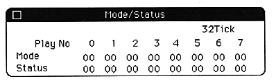
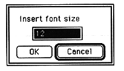
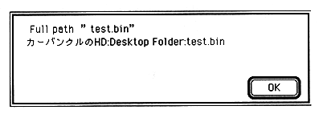

Return to previous page ｜ Return to menu ｜ Go to next page
Show Mode/Status
- Displays a dialog that displays the current Mode and Status of the target.
When this menu is selected, the following dialog is displayed.

The display data can be updated using the Print Control dialog in the SoundSimulator dialog and Function key setup dialog. To close this dialog, press the close box.
Display Mode
When - Display Mode is selected, the following dialog box opens.

Specify the font size of display characters. If the screen is too small to read, you can specify a larger font size.
Display FullPath
If you select - Display FullPath, the following dialog box opens.

When data or folders are moved by dragging, etc., file data cannot be read because there is no specified file in the previously registered folder location. Click the file name to select it, and then click Print FullPath to display the full path of the folder where the file is registered.
MakeSoundBinary
- Read each file according to the map layout that is currently current, and output the same data as the data sent to the target. The transmission file to be filed is the one with the full path set. The size is 479KB from 0xB000 to 0x80000. The part where the full path does not exist is filled with 0x00.
Return to previous page ｜ Return to menu ｜ Go to next page